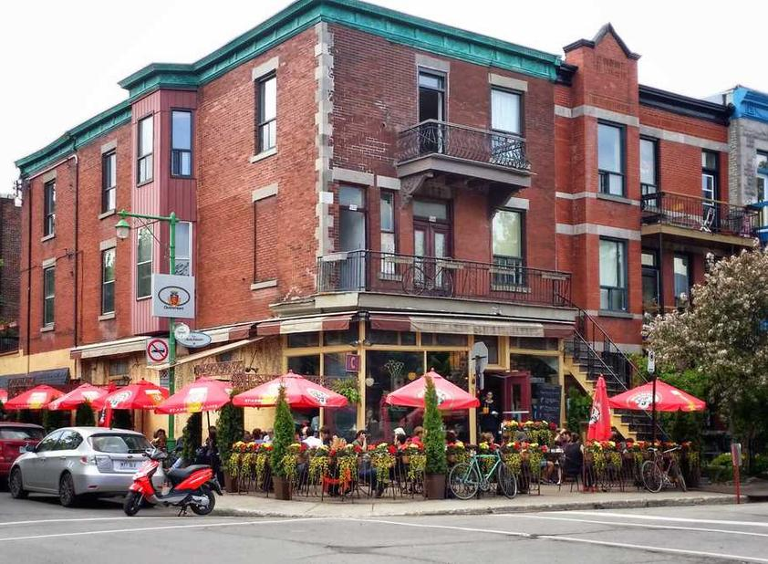

Une cuisine authentique et généreuse face à la Seine
Réserver une table Voir le menuL'esprit des bouchons lyonnais au cœur des Yvelines
Le Porc Marly, c'est une ambiance et une cuisine typique d'un bouchon lyonnais, où s'ajoute un bar à vin, le tout face à la Seine. Spécialiste des vins de Bourgogne, notre cave présente 200 références, label « bistrot Beaujolais », et toutes les chartreuses et cuvées spéciales.
Côté carte, nos plats faits maison sont généreux, concoctés avec des produits frais et de saison : tablier de sapeur, andouillette Bobosse, fraise de veau... Pour la touche sucrée, laissez-vous tenter par une crème brûlée à la chartreuse ou à la lavande.
En savoir plusDes plats traditionnels préparés avec passion
Une spécialité lyonnaise à base de gras-double de bœuf pané et frit, servie avec une sauce tartare maison.

La fameuse andouillette artisanale 5A, grillée et accompagnée de pommes de terre sautées et d'une sauce moutarde.
Un mets délicat et savoureux, mijotée lentement et servie avec une sauce vinaigrette.
Notre dessert signature, une crème brûlée parfumée à la chartreuse pour une fin de repas gourmande.
13, rue de Paris
78560 Le Port-Marly
Du mercredi au samedi
12h à 15h (dernier service à 14h30)
18h à 00h (dernier service à 22h30)
Dimanche : 12h à 22h30
01.79.35.72.00
Réserver en ligne